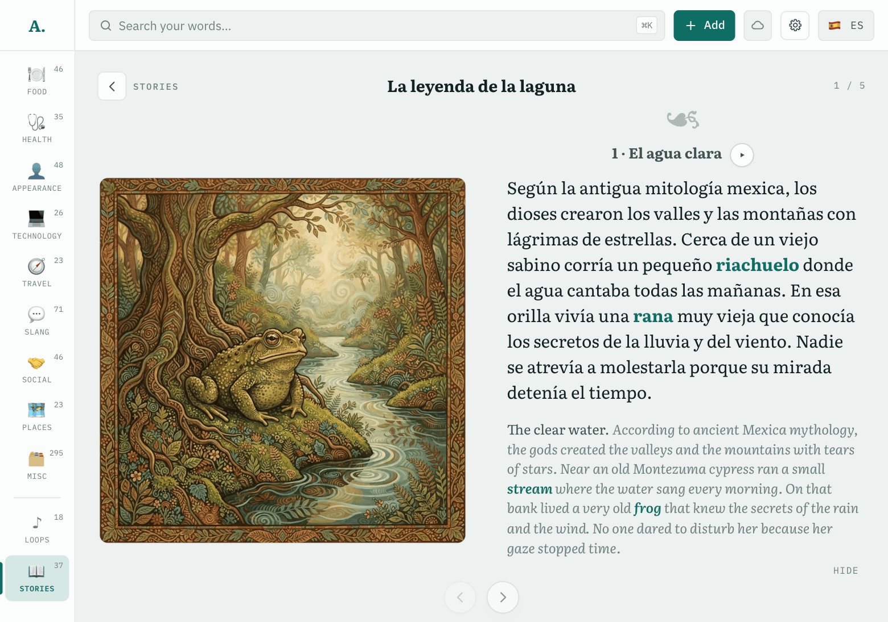
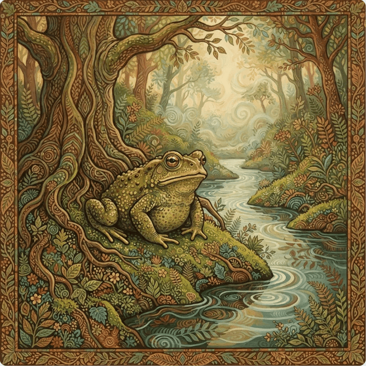
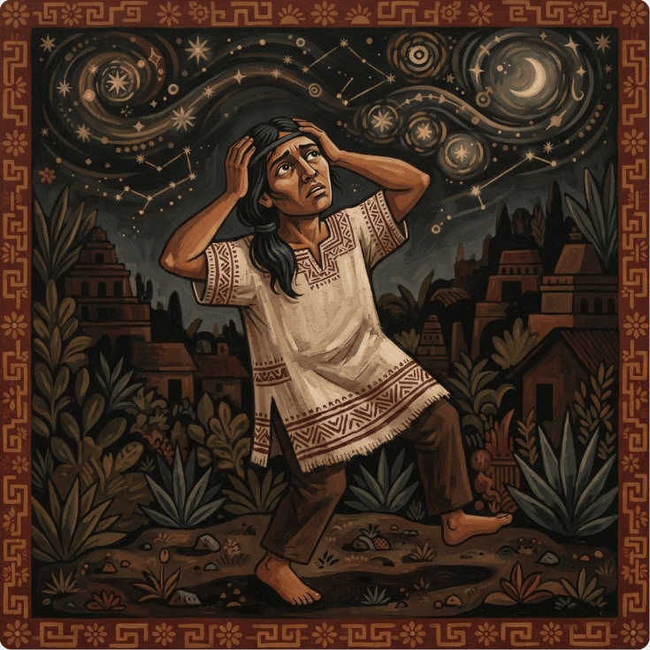
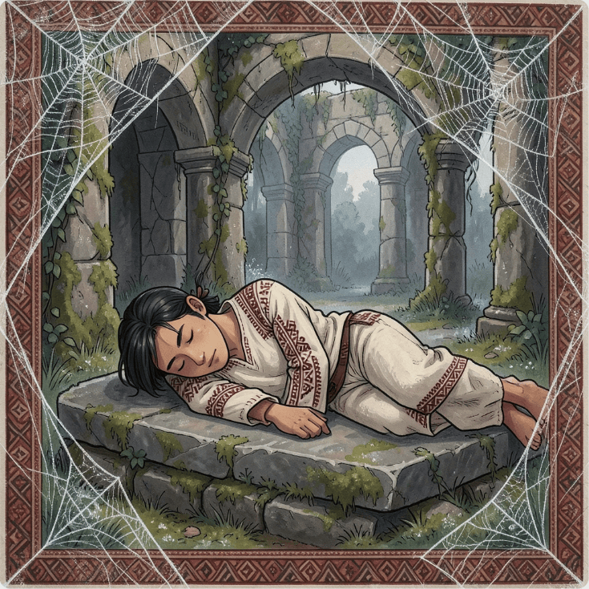
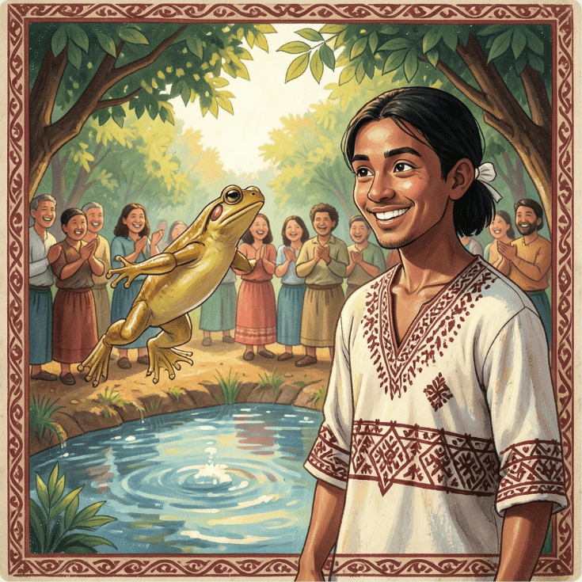

Four parts, each with its picture

1
2
3
4Read aloud, with directionA language model cuts each part into passages and writes a direction for the voice for each. The first here: “Mythical and grand, with a resonant, storytelling tone.”
MeasuredDoes the boy stay the same boy? A later picture is drawn with the first picture of each returning character as a reference. Blind, side by side, 12 pairs: with references preferred 9, tie 3, without 0.experiments/story-picture-reference